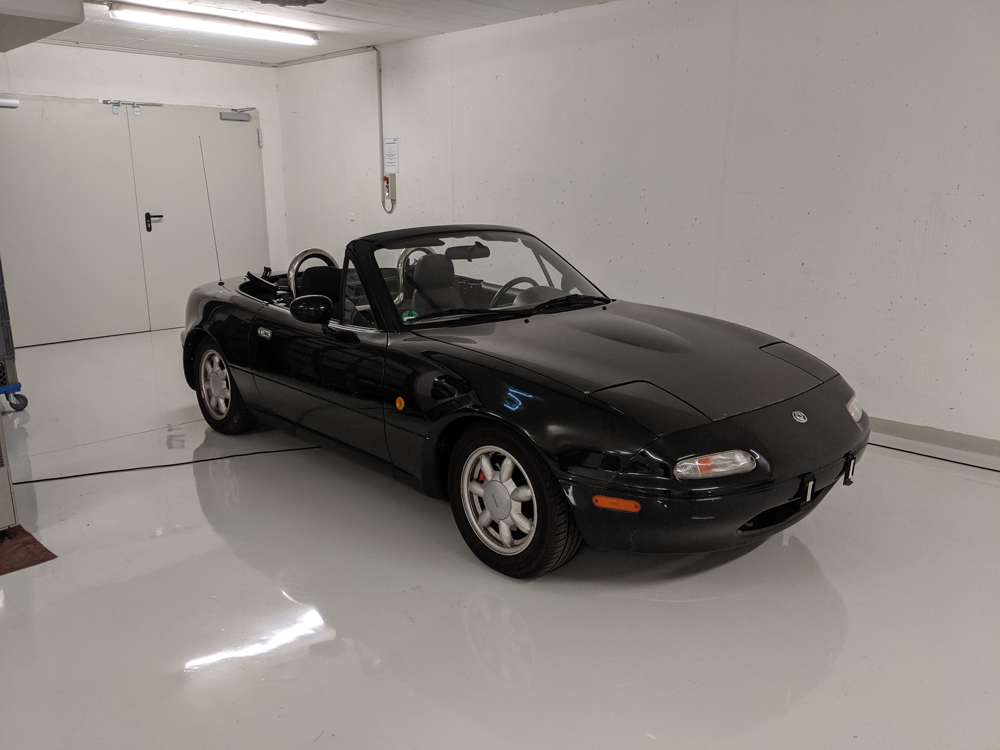
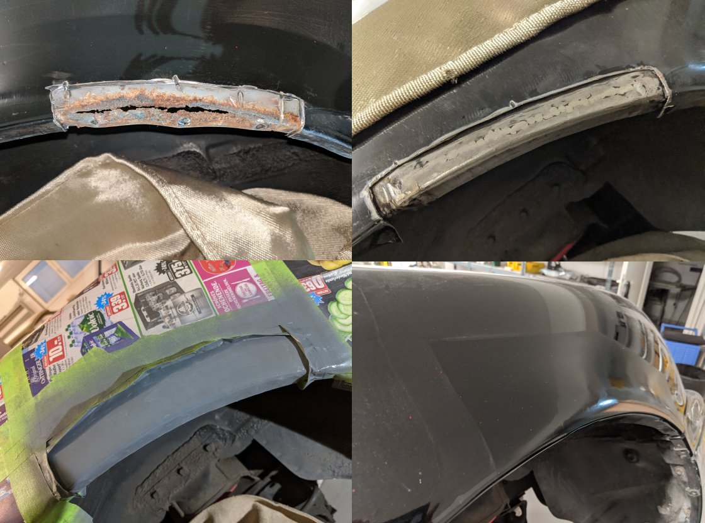
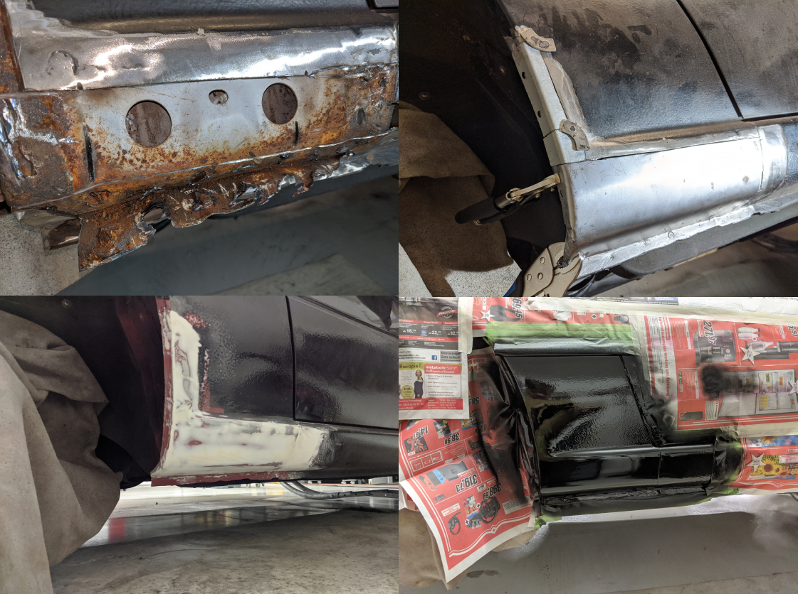
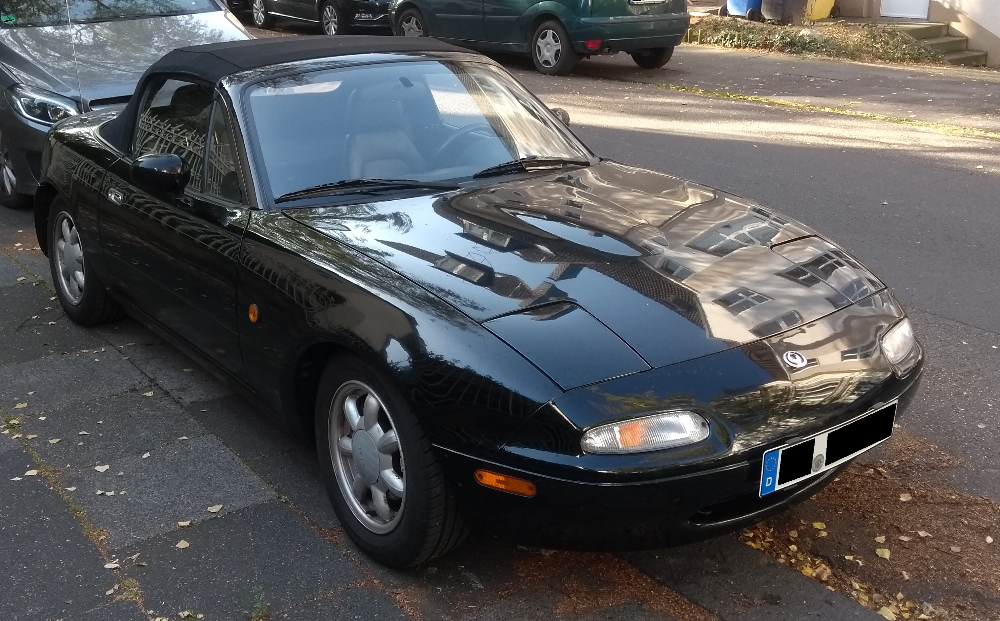

MX5 KITT: Introduction
Recently, I bought a project car: A 1997 Mazda MX5. It’s actually even a special edition called “MX5 Classic”. It’s got all the latest (well, for 20 years ago anyway) things you’d want to have: ABS, double airbags, and luckily not much else. It’s a relatively simple car and thus great for modding!
It was only a short drive away, and after initial inspection with my friend Idefix, I immediately picked it up. Here it is in the garage:

A few days later, it was time to start work: Most of these cars have pretty bad rust, and as it turned out, mine was no exception.
We started on the driver’s side as the paint was bubbling on the wheel arch and sill already, which is indicative of the metal below having rusted through.
The usual way to fix this is to remove the rusty metal (usually with an angle grinder), then weld in new metal. Afterwards, the bubbles from the welding process need to be removed (again with an angle grinder). This isn’t nearly flat enough for paint though, so body filler is added on top and sanded flat. After the surface is smooth, it can finally be painted. We used a spray can with paint custom-mixed to fit the car’s color for pretty good results.

After the paint had dried, we took the car down, turned it around and then jacked it back up. The passenger side was a lot worse than expected, with most of the rear sill gone.

Doing all these repairs took about a month, but the car is finally ready to drive again! We put the wheels back on, I did a quick wash, and off we went.
The engine runs nicely, and the car is an absolute blast to drive (especially with the top down)!
